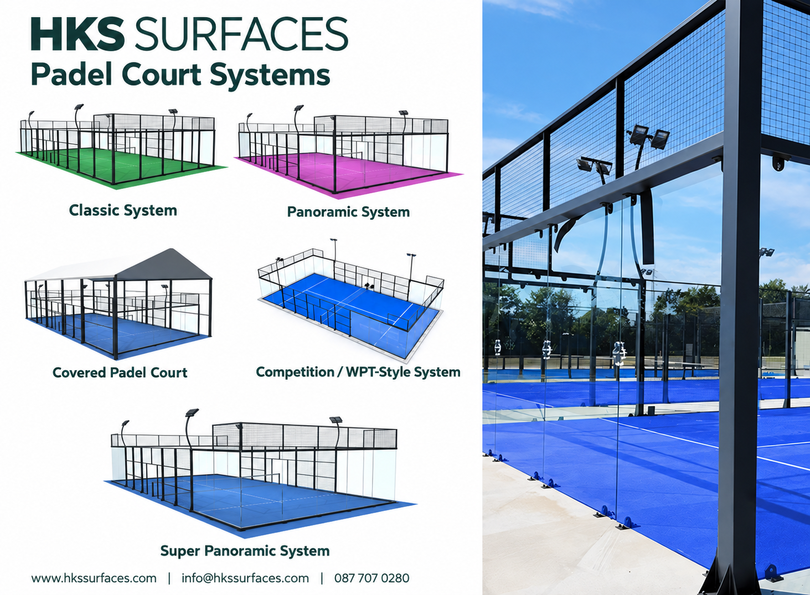

Padel Court Systems in Thailand
Padel is growing rapidly as a recreational and competitive sport. A professional padel facility requires more than just a playing surface — the court enclosure, structural frame, glass panels, fencing, lighting and flooring all work together as one complete system.

HKS Surfaces provides professional padel court solutions for clubs, sports centres, schools, hotels, resorts, residential developments and commercial sports facilities in Thailand. Different court structures can be selected according to the project design, budget, location and required playing experience.
Types of Padel Court Systems
1. Classic Padel Court System
The Classic system combines glass panels with a robust steel structure and mesh fencing. It provides a practical and durable solution suitable for both recreational and commercial padel facilities.
Ideal for: Schools, sports clubs, community facilities and private developments.
2. Panoramic Padel Court System
Panoramic courts reduce the number of structural elements around the glass playing area, creating clearer sightlines and a more premium appearance.
Ideal for: Commercial padel clubs, hotels, resorts and premium sports facilities.
3. Super Panoramic Padel Court System
The Super Panoramic design provides maximum visibility around the playing area with minimal visual obstruction. This creates a modern court appearance and an excellent spectator experience.
Ideal for: Premium clubs, competition venues and showcase courts.
4. Competition / WPT-Style System
Competition-style padel courts are designed with excellent visibility for spectators, events, photography and broadcasting. The system can be configured according to project and competition requirements.
Ideal for: Tournaments, padel centres and event facilities.
5. Covered Padel Court
A covered padel court adds a roof structure above the playing area, helping protect players and the court from strong sun and rain. This can be particularly useful for Thailand's tropical climate.
Ideal for: Resorts, schools, clubs and all-weather commercial facilities.
What Makes a Complete Padel Court?
A complete padel court is a combination of several carefully coordinated components:
- Structural steel court frame
- Tempered glass wall system
- Steel mesh fencing
- Artificial grass or suitable sports flooring
- LED court lighting
- Net and court accessories
- Prepared concrete foundation
- Drainage for outdoor installations
Choosing the Playing Surface
The playing surface has a major influence on player movement, traction, comfort and ball behaviour. Artificial grass is one of the most widely used surfaces for dedicated padel courts, typically combined with appropriate infill.
Depending on the facility and application, HKS Surfaces can also advise on suitable sports flooring systems and the preparation of the supporting base.
Padel Courts for Thailand's Climate
Outdoor padel courts in Thailand must be planned for strong sunlight, heavy rainfall, humidity and intensive use. Correct drainage, structural protection, suitable outdoor materials and professional installation are therefore important considerations when developing a long-lasting facility.
Which Padel Court System Should You Choose?
The right system depends on the location, available budget, architectural requirements and intended use. A Classic system provides a practical solution, while Panoramic and Super Panoramic designs offer greater visibility and a premium appearance. Covered courts can provide additional weather protection for facilities that want more consistent year-round operation.
Build Your Padel Court with HKS Surfaces
HKS Surfaces provides padel court and sports flooring solutions for projects throughout Thailand. Contact our team to discuss your court type, flooring system and project requirements. HKS SurfacesTel: 087 707 0280
Email: info@hkssurfaces.com
Website: www.hkssurfaces.com